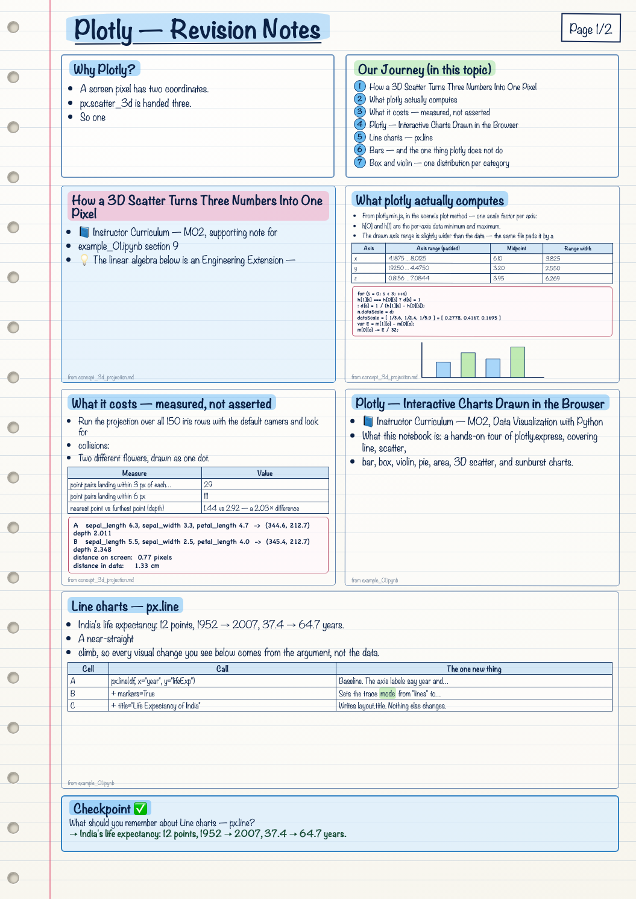
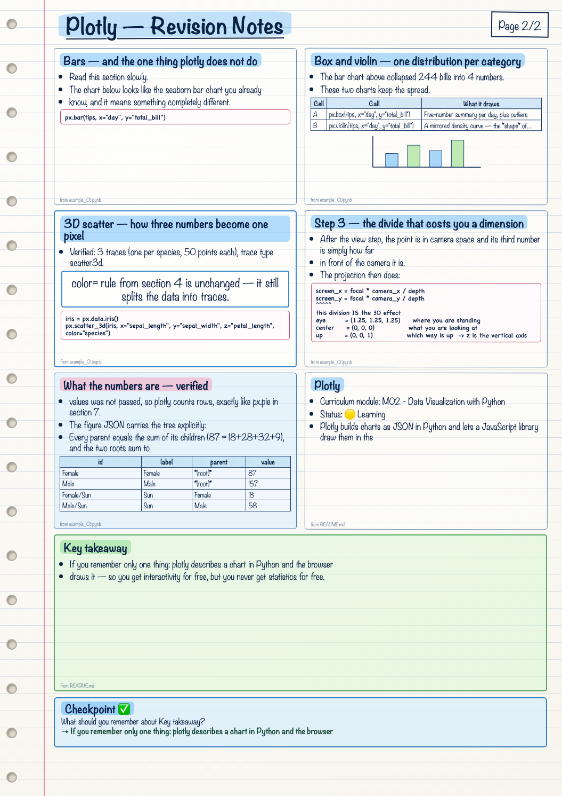

<!DOCTYPE html>
<html lang="en">
<head>
<meta charset="utf-8">
<meta name="viewport" content="width=device-width, initial-scale=1">
<title>Plotly — Lesson</title>
<link rel="stylesheet" href="../../../17_Learning_As_Of_Now/shared/lesson.css">
</head>
<body>
<div class="progress"></div>
<header class="bar">
  <div class="crumb">01 Python › <b>Plotly</b></div>
  <a class="btn" href="../../../17_Learning_As_Of_Now/Claude/index.html">← Map</a>
  <a class="btn primary" href="../Concept/">Open the source files ↗</a>
</header>
<div class="wrap">
<nav class="toc"><p class="toc-h">On this page</p><a href="#plotly">Plotly</a><a href="#files">Files</a><a href="#the-one-pattern">The one pattern</a><a href="#the-trap-worth-knowing-before-you-start">The trap worth knowing before you start</a><a href="#covered-so-far">Covered so far</a><a href="#common-mistakes-this-notebook-fixes">Common mistakes this notebook fixes</a><a href="#key-takeaway">Key takeaway</a><a href="#how-a-3d-scatter-turns-three-numbers-into-one-pi">How a 3D Scatter Turns Three Numbers Into One Pixel</a><a href="#s-1-the-problem-in-one-line">1. The problem in one line</a><a href="#s-2-the-four-steps">2. The four steps</a><a href="#s-3-step-1-model-from-centimetres-to-a-box-around-">3. Step 1 — model: from centimetres to a box around </a><a href="#s-4-step-2-view-put-the-camera-at-the-origin">4. Step 2 — view: put the camera at the origin</a><a href="#s-5-step-3-projection-the-divide">5. Step 3 — projection: the divide</a><a href="#s-6-step-4-viewport-ndc-to-pixels">6. Step 4 — viewport: NDC to pixels</a><a href="#s-7-what-it-costs-measured-not-asserted">7. What it costs — measured, not asserted</a><a href="#s-8-why-rotating-is-not-just-nice-it-is-the-fix">8. Why rotating is not just nice, it is the fix</a><a href="#s-9-the-alternatives-that-do-not-lose-anything">9. The alternatives that do not lose anything</a><a href="#s-10-reproduce-the-numbers-yourself">10. Reproduce the numbers yourself</a><a href="#interview-view">Interview view</a><a href="#plotly-interactive-charts-drawn-in-the-browser">Plotly — Interactive Charts Drawn in the Browser</a><a href="#the-mental-model-read-this-first">The mental model — read this first</a><a href="#s-1-setup-install-and-import">1. Setup — install and import</a><a href="#s-2-built-in-datasets-px-data">2. Built-in datasets — px.data</a><a href="#s-3-line-charts-px-line">3. Line charts — px.line</a><a href="#s-4-scatter-and-the-visual-channels">4. Scatter and the visual channels</a><a href="#s-5-bars-and-the-one-thing-plotly-does-not-do">5. Bars — and the one thing plotly does not do</a><a href="#s-6-box-and-violin-one-distribution-per-category">6. Box and violin — one distribution per category</a><a href="#s-7-pie-two-different-ways-to-feed-the-same-chart">7. Pie — two different ways to feed the same chart</a><a href="#s-8-area-a-line-with-the-region-below-it-filled">8. Area — a line with the region below it filled</a><a href="#s-9-3d-scatter-how-three-numbers-become-one-pixel">9. 3D scatter — how three numbers become one pixel</a><a href="#s-10-sunburst-nesting-instead-of-a-third-axis">10. Sunburst — nesting instead of a third axis</a><a href="#s-11-wrapping-up">11. Wrapping up</a><a href="#handwritten">✍️ Handwritten notes</a><a href="#handwritten">✍️ Handwritten notes</a></nav>
<main class="doc">
<div class="hero">
  <p class="eyebrow">Python and the data toolkit</p>
  <h1>Plotly</h1>
  <p class="lede">Everything studied in this topic, rendered from the notebooks and notes themselves.</p>
  <div class="tags"><span class="tag">1 notebook · 2 notes</span><a class="tag hn-jump" href="#handwritten">✍️ 2 handwritten pages</a></div>
</div>
<div class="src-head">📝 <a href="../Concept/README.md">README.md</a></div>
<h2 id="plotly">Plotly</h2>
<p><strong>Curriculum module:</strong> M02 - Data Visualization with Python<br />
<strong>Status:</strong> 🟡 Learning</p>
<p>Plotly builds charts as <strong>JSON in Python</strong> and lets a JavaScript library draw them in the
browser. Matplotlib and seaborn produce pixels; plotly produces a description. That one
difference gives you zoom, hover, clickable legends, and a draggable 3D camera for free —
and it is also why some work you expect Python to do actually happens in the browser.</p>
<h2 id="files">Files</h2>
<table class="tbl"><thead>
<tr>
  <th>File</th>
  <th>Contents</th>
</tr>
</thead>
<tbody>
<tr>
  <td><a href="../Concept/example_01.ipynb"><code>example_01.ipynb</code></a></td>
  <td>The full tour: line, scatter, bar, box, violin, pie, area, 3D scatter, and sunburst. <strong>All explanation lives in this notebook</strong>, in the Markdown cells above each group of code cells.</td>
</tr>
<tr>
  <td><a href="../Concept/concept_3d_projection.md"><code>concept_3d_projection.md</code></a></td>
  <td>Deep dive: how <code>px.scatter_3d</code> turns three columns into one pixel — the model, view, and projection matrices worked with real <code>iris</code> numbers, and what the projection costs you.</td>
</tr>
</tbody>
</table>
<h2 id="the-one-pattern">The one pattern</h2>
<div class="code"><pre>px.&lt;chart&gt;(dataframe, x=&quot;col&quot;, y=&quot;col&quot;, color=&quot;col&quot;, size=&quot;col&quot;)
</pre></div>
<p>Same shape as seaborn — you name columns, not numbers. The key mechanism:
<strong><code>color=</code> splits the data into separate traces</strong>, and a trace is the unit plotly can
show or hide. That is what makes the legend clickable.</p>
<h2 id="the-trap-worth-knowing-before-you-start">The trap worth knowing before you start</h2>
<p><strong>Plotly looks like seaborn and behaves like matplotlib.</strong></p>
<div class="code"><pre>sns.barplot(x=&quot;day&quot;, y=&quot;total_bill&quot;, data=tips)   -&gt;  bar height = MEAN, plus a 95% CI
px.bar(tips, x=&quot;day&quot;, y=&quot;total_bill&quot;)             -&gt;  bar height = SUM of stacked rows
</pre></div>
<p>Verified in the notebook: <code>px.bar</code> sends all <strong>244 rows</strong> to the browser and stacks them.
Seaborn sends 4 aggregated numbers. Plotly express does not compute statistics — shape the
data in pandas first, then plot it.</p>
<h2 id="covered-so-far">Covered so far</h2>
<p><code>px.data</code> datasets, <code>px.line</code> with <code>markers</code> and <code>title</code>, <code>px.scatter</code> with <code>color</code> and
<code>size</code>, <code>px.bar</code> with <code>color</code> and <code>orientation</code>, <code>px.box</code>, <code>px.violin</code>, <code>px.pie</code> from
lists and from row counts, <code>px.area</code>, <code>px.scatter_3d</code>, and <code>px.sunburst</code> with <code>path</code>.
Also the mechanics behind them: trace splitting, <code>sizeref</code> area scaling, browser-side
quartiles, category ordering, and the 3D projection pipeline.</p>
<p><strong>Not covered yet:</strong> <code>px.histogram</code> (the one <code>px</code> chart that <em>does</em> aggregate, via
<code>histfunc</code>), faceting with <code>facet_row</code> / <code>facet_col</code>, <code>hover_data</code>, <code>fig.update_layout</code>
and <code>update_traces</code>, colour scales and templates, <code>animation_frame</code>, saving with
<code>write_html</code> / <code>write_image</code>, and the <code>plotly.graph_objects</code> API that the notebook imports
but never uses.</p>
<h2 id="common-mistakes-this-notebook-fixes">Common mistakes this notebook fixes</h2>
<table class="tbl"><thead>
<tr>
  <th>Mistake</th>
  <th>Correction</th>
</tr>
</thead>
<tbody>
<tr>
  <td><code>px.data_tips()</code></td>
  <td><code>px.data.tips()</code> — <code>data</code> is a submodule, so it is a dot</td>
</tr>
<tr>
  <td>Reading a <code>px.bar</code> height as an average</td>
  <td>it is a <strong>sum</strong> of one stacked rectangle per row</td>
</tr>
<tr>
  <td>Expecting alphabetical categories</td>
  <td>order is <strong>first appearance in the DataFrame</strong>; use <code>category_orders=</code></td>
</tr>
<tr>
  <td><code>color=&quot;red&quot;</code></td>
  <td><code>color</code> takes a <strong>column name</strong>; use <code>color_discrete_sequence=[&quot;red&quot;]</code></td>
</tr>
<tr>
  <td>Trusting distances in a 3D scatter</td>
  <td>each axis is normalised by its own span, so the unit cancels</td>
</tr>
</tbody>
</table>
<h2 id="key-takeaway">Key takeaway</h2>
<p><strong>If you remember only one thing:</strong> plotly describes a chart in Python and the browser
draws it — so you get interactivity for free, but you never get statistics for free.</p>

<div class="src-head">📝 <a href="../Concept/concept_3d_projection.md">concept_3d_projection.md</a></div>
<h2 id="how-a-3d-scatter-turns-three-numbers-into-one-pi">How a 3D Scatter Turns Three Numbers Into One Pixel</h2>
<div class="note"><div class="h">Note</div><p>📘 <strong>Instructor Curriculum</strong> — M02, supporting note for
<a href="../Concept/example_01.ipynb"><code>example_01.ipynb</code></a> section 9</p>
<p>💡 The linear algebra below is an <strong>Engineering Extension</strong> —
<em>Recommended Extension - Not part of instructor curriculum.</em> You can use
<code>px.scatter_3d</code> without it. Read this when you want to know why a 3D chart can
mislead you, rather than just being told that it can.</p>
</div>
<p>Everything here is checked against <strong>plotly 6.9.0</strong>, using the bundled renderer
<code>plotly/package_data/plotly.min.js</code> and the real <code>px.data.iris()</code> values. Source
snippets are quoted from that file.</p>
<hr />
<h2 id="s-1-the-problem-in-one-line">1. The problem in one line</h2>
<p>A screen pixel has <strong>two</strong> coordinates. <code>px.scatter_3d</code> is handed <strong>three</strong>. So one
number cannot survive as a position. The question is not <em>whether</em> something is lost —
it is <em>what</em> is lost, and what that costs you when you read the chart.</p>
<h2 id="s-2-the-four-steps">2. The four steps</h2>
<div class="code"><pre>   DATA            WORLD             CAMERA            NDC            SCREEN
   (5.1,3.5,1.4)   (-0.25,          (0.23,            (0.15,         (403, 354)
    centimetres     0.08,            -0.46,            -0.42)         pixels
                    -0.65)           -2.64)
        |               |                 |                |              |
        +--- model -----+---- view -------+--- projection -+-- viewport --+
             matrix          matrix           + divide        transform
</pre></div>
<p>Four transforms. Three of them are ordinary moving and scaling. <strong>All the information
loss happens in one place: the divide inside step 3.</strong></p>
<p>The worked example throughout is the first row of <code>iris</code>:</p>
<div class="code"><pre class="py">iris.iloc[0]     # sepal_length 5.1, sepal_width 3.5, petal_length 1.4, species setosa
</pre></div>
<hr />
<h2 id="s-3-step-1-model-from-centimetres-to-a-box-around-">3. Step 1 — model: from centimetres to a box around the origin</h2>
<h3>3.1 Why anything has to happen at all</h3>
<p>The three chosen columns do not share a range:</p>
<table class="tbl"><thead>
<tr>
  <th>Axis</th>
  <th>Column</th>
  <th>Data min</th>
  <th>Data max</th>
  <th>Span</th>
</tr>
</thead>
<tbody>
<tr>
  <td>x</td>
  <td><code>sepal_length</code></td>
  <td>4.3</td>
  <td>7.9</td>
  <td><strong>3.6</strong></td>
</tr>
<tr>
  <td>y</td>
  <td><code>sepal_width</code></td>
  <td>2.0</td>
  <td>4.4</td>
  <td><strong>2.4</strong></td>
</tr>
<tr>
  <td>z</td>
  <td><code>petal_length</code></td>
  <td>1.0</td>
  <td>6.9</td>
  <td><strong>5.9</strong></td>
</tr>
</tbody>
</table>
<p>Drawn in raw centimetres, the box would be a thin slab and two of the three variables
would be nearly invisible. So each axis is scaled by its own span.</p>
<h3>3.2 What plotly actually computes</h3>
<p>From <code>plotly.min.js</code>, in the scene's <code>plot</code> method — one scale factor per axis:</p>
<div class="code"><pre>for (s = 0; s &lt; 3; ++s)
    h[1][s] === h[0][s] ? d[s] = 1
                        : d[s] = 1 / (h[1][s] - h[0][s]);
n.dataScale = d;
</pre></div>
<p><code>h[0]</code> and <code>h[1]</code> are the per-axis data minimum and maximum. So:</p>
<div class="code"><pre>   dataScale = [ 1/3.6, 1/2.4, 1/5.9 ] = [ 0.2778, 0.4167, 0.1695 ]
</pre></div>
<p>The drawn axis range is slightly wider than the data — the same file pads it by a
thirty-second of the span at each end:</p>
<div class="code"><pre>var E = m[1][o] - m[0][o];
m[0][o] -= E / 32;
m[1][o] += E / 32;
</pre></div>
<table class="tbl"><thead>
<tr>
  <th>Axis</th>
  <th>Axis range (padded)</th>
  <th>Midpoint</th>
  <th>Range width</th>
</tr>
</thead>
<tbody>
<tr>
  <td>x</td>
  <td>4.1875 … 8.0125</td>
  <td>6.10</td>
  <td>3.825</td>
</tr>
<tr>
  <td>y</td>
  <td>1.9250 … 4.4750</td>
  <td>3.20</td>
  <td>2.550</td>
</tr>
<tr>
  <td>z</td>
  <td>0.8156 … 7.0844</td>
  <td>3.95</td>
  <td>6.269</td>
</tr>
</tbody>
</table>
<p>Then the model matrix (this one lives in the bundled <code>gl-plot3d</code>) scales and re-centres:</p>
<div class="code"><pre>g.autoScale ? V[5 * ae] = g.aspect[ae] / (E[1][ae] - E[0][ae])
            : V[5 * ae] = 1 / _e,
g.autoCenter &amp;&amp; (V[12 + ae] = -V[5 * ae] * 0.5 * (E[0][ae] + E[1][ae]))
</pre></div>
<p>That is a diagonal scale plus a translation — a matrix of the form</p>
<div class="code"><pre>        | sx  0   0   tx |          sx = aspect_x / rangeWidth_x
   M =  | 0   sy  0   ty |          tx = -sx * midpoint_x
        | 0   0   sz  tz |
        | 0   0   0   1  |
</pre></div>
<h3>3.3 The formula worth memorising</h3>
<p>Compose the <code>dataScale</code> step with the model matrix and <strong>the scale factor cancels
out entirely</strong>. What is left is readable:</p>
<div class="code"><pre>   world[i] = (value - axisMid[i]) / axisRangeWidth[i] * aspect[i]
              \___________________________________/
                fraction of the axis, measured from its middle
                     -0.5 = axis minimum,  +0.5 = axis maximum
</pre></div>
<p>For row 0:</p>
<div class="code"><pre>   x:  (5.1 - 6.10) / 3.825 = -0.2614   -&gt;  x 0.9709  =  -0.2538
   y:  (3.5 - 3.20) / 2.550 =  0.1176   -&gt;  x 0.6473  =   0.0762
   z:  (1.4 - 3.95) / 6.269 = -0.4068   -&gt;  x 1.5912  =  -0.6473

   world = (-0.2538, 0.0762, -0.6473)
</pre></div>
<h3>3.4 The first honest warning</h3>
<p><strong>The unit is gone.</strong> After this step nothing in the pipeline knows what a centimetre
is. A 1 cm step along <code>sepal_width</code> (span 2.4) is drawn <strong>1.64× longer</strong> than a 1 cm
step along <code>petal_length</code> (span 5.9).</p>
<p>So: <em>distance you see in a 3D scatter is not distance in the data.</em> Two clusters that
look equally far apart along different axes usually are not. This is true of 2D scatter
plots too, but in 2D you can read it off the axis ticks — in 3D, with the box rotated
and the ticks foreshortened, almost nobody does.</p>
<h3>3.5 The aspect ratio — putting a little shape back</h3>
<p><code>aspect</code> is what stops the box from always being a perfect cube. From the same file:</p>
<div class="code"><pre>if (V === &quot;cube&quot;) q = [1, 1, 1];
else if (V === &quot;manual&quot;) { ... }
else if (V === &quot;auto&quot; || V === &quot;data&quot;) {
    var Z = [1, 1, 1];
    for (o = 0; o &lt; 3; ++o) {
        var j = p[u];
        Z[o] = Math.pow(j.acc, 1 / j.count) / d[o];
    }
    V === &quot;data&quot; || Math.max.apply(null, Z) / Math.min.apply(null, Z) &lt;= 4
        ? q = Z
        : q = [1, 1, 1];
}
</pre></div>
<p>With three linear axes, <code>j.acc</code> is <code>d[0]*d[1]*d[2]</code> and <code>j.count</code> is 3 — so
<code>pow(j.acc, 1/3)</code> is the <strong>geometric mean</strong> of the scale factors, and</p>
<div class="code"><pre>   aspect[i] = geomean(dataScale) / dataScale[i]
             = geomean(dataScale) * span[i]        &lt;- proportional to the real span
</pre></div>
<p>For iris:</p>
<div class="code"><pre>   geomean(dataScale) = (0.2778 x 0.4167 x 0.1695)^(1/3) = 0.2697

   aspect = 0.2697 x [3.6, 2.4, 5.9] = [0.9709, 0.6473, 1.5912]

   max/min = 1.5912 / 0.6473 = 2.458   &lt;= 4   -&gt;  keep these proportions
</pre></div>
<p><code>aspectmode</code> defaults to <code>&quot;auto&quot;</code>, which means <em>&quot;stay proportional to the data unless
one axis is more than 4× another, in which case give up and draw a cube.&quot;</em> Above that
ratio the shape would be an unusable sliver, so plotly silently switches to <code>[1,1,1]</code> —
worth knowing, because at that point the picture stops being proportional at all and
nothing on screen tells you.</p>
<p>Override it when you need honesty:</p>
<div class="code"><pre class="py">fig.update_layout(scene_aspectmode=&quot;data&quot;)    # always proportional, never a cube
fig.update_layout(scene_aspectmode=&quot;cube&quot;)    # always a cube, never proportional
</pre></div>
<hr />
<h2 id="s-4-step-2-view-put-the-camera-at-the-origin">4. Step 2 — view: put the camera at the origin</h2>
<p>Nothing is lost here. The whole world is rotated and shifted so that the camera sits at
the origin looking down its own −Z axis. It is a change of address, not of shape.</p>
<p>Plotly's defaults, straight from the attribute table in <code>plotly.min.js</code>:</p>
<div class="code"><pre>camera: {
    up:     GX(HX(0, 0, 1), {}),
    center: GX(HX(0, 0, 0), {}),
    eye:    GX(HX(1.25, 1.25, 1.25), {}),
    projection: { type: { values: [&quot;perspective&quot;, &quot;orthographic&quot;], dflt: &quot;perspective&quot; } }
}
</pre></div>
<table class="tbl"><thead>
<tr>
  <th>Field</th>
  <th>Default</th>
  <th>Meaning</th>
</tr>
</thead>
<tbody>
<tr>
  <td><code>eye</code></td>
  <td>(1.25, 1.25, 1.25)</td>
  <td>where you are standing, in world units</td>
</tr>
<tr>
  <td><code>center</code></td>
  <td>(0, 0, 0)</td>
  <td>the point you are looking at</td>
</tr>
<tr>
  <td><code>up</code></td>
  <td>(0, 0, 1)</td>
  <td>which way is up — <strong>this is why z is the vertical axis</strong></td>
</tr>
<tr>
  <td><code>projection.type</code></td>
  <td><code>&quot;perspective&quot;</code></td>
  <td>near things drawn larger</td>
</tr>
</tbody>
</table>
<p><code>eye</code> sits on the long diagonal of the box, <code>2.165</code> world units from the centre. That
single default is why every untouched plotly 3D chart looks like you are hovering above
one corner.</p>
<h3>4.1 Building the matrix</h3>
<p>The bundle uses gl-matrix's <code>lookAt</code>, which builds three orthogonal unit vectors:</p>
<div class="code"><pre>   forward  f = normalise(center - eye) = (-0.5774, -0.5774, -0.5774)
   right    s = normalise(f x up)       = (-0.7071,  0.7071,  0.0000)
   true up  u = s x f                   = (-0.4082, -0.4082,  0.8165)
</pre></div>
<p>and stacks them as rows, with the translation <code>-(vector · eye)</code> in the last column:</p>
<div class="code"><pre>         | -0.7071   0.7071   0.0000    0.0000 |
   V  =  | -0.4082  -0.4082   0.8165    0.0000 |
         |  0.5774   0.5774   0.5774   -2.1651 |
         |  0.0000   0.0000   0.0000    1.0000 |
</pre></div>
<p>Read the rows as questions asked of the point: <em>how far right? how far up? how far
back?</em></p>
<h3>4.2 Our point</h3>
<div class="code"><pre>   V x (-0.2538, 0.0762, -0.6473, 1)  =  (0.2333, -0.4560, -2.6413, 1)
                                          \____/  \_____/  \______/
                                          right     up      -depth
</pre></div>
<p>The third component is now <strong>−2.6413</strong>, meaning the point is 2.6413 units in front of
the camera. Depth has become an explicit number. It is the last moment it exists as a
position.</p>
<hr />
<h2 id="s-5-step-3-projection-the-divide">5. Step 3 — projection: the divide</h2>
<p>The perspective matrix (gl-matrix's <code>perspective</code>, <code>fovy = π/4</code>, <code>near = 0.01</code>,
<code>far = 1000</code>) is:</p>
<div class="code"><pre>   focal = 1 / tan(fov / 2) = 1 / tan(22.5 deg) = 2.4142
   canvas 700 x 500  -&gt;  aspect = 1.4

         | focal/aspect   0       0        0    |     | 1.7244  0       0       0      |
   P  =  |      0       focal     0        0    |  =  | 0       2.4142  0       0      |
         |      0         0      A         B    |     | 0       0      -1.0000 -0.0200 |
         |      0         0      -1        0    |     | 0       0      -1       0      |
</pre></div>
<p>The fourth row is <code>(0, 0, −1, 0)</code>. That is the whole mechanism: it <strong>copies the depth
into the w slot</strong>. Then the hardware divides everything by w:</p>
<div class="code"><pre>   clip   = P x camera = (0.4024, -1.1008, 2.6214, 2.6414)
                                                   \______/
                                                   w = depth

   ndc    = clip / w   = (0.1523, -0.4167, 0.9924)
</pre></div>
<p>Written without matrices:</p>
<div class="code"><pre>   ndc_x = 1.7244 x  0.2333 / 2.6413 =  0.1523
   ndc_y = 2.4142 x -0.4560 / 2.6413 = -0.4167
                              ^^^^^^
                    every 3D chart is this division
</pre></div>
<p><strong>This is where the third dimension is spent.</strong> Not hidden, not compressed — <em>consumed</em>
as a divisor. Two consequences follow immediately:</p>
<ol>
<li>Far points get divided by a larger number, so they move toward the screen centre and
shrink. That is why the cube's edges converge.</li>
<li>Any two points on the same line out of the eye divide down to the <strong>same</strong> <code>ndc</code>.
The mapping from 3D to 2D is many-to-one, so it cannot be undone.</li>
</ol>
<p>The third <code>ndc</code> component (0.9924) is kept, but only for the depth buffer — it decides
which point is drawn in front. It never becomes a position you can read.</p>
<div class="note"><div class="h">Note</div><p>Setting <code>projection.type = &quot;orthographic&quot;</code> removes the divide (w stays 1). Parallel
lines stay parallel and distances along an axis stay comparable — but you lose the
depth cue entirely, so it usually looks flatter and more confusing, not less.</p>
</div>
<hr />
<h2 id="s-6-step-4-viewport-ndc-to-pixels">6. Step 4 — viewport: NDC to pixels</h2>
<p>Plain arithmetic on a 700 × 500 canvas. Note the flip: NDC counts up, screen pixels
count down.</p>
<div class="code"><pre>   px = (ndc_x + 1) / 2 x width  = (0.1523 + 1) / 2 x 700 = 403.3
   py = (1 - ndc_y) / 2 x height = (1 + 0.4167) / 2 x 500 = 354.2
</pre></div>
<div class="code"><pre>   iris row 0  (5.1, 3.5, 1.4)  -&gt;  pixel (403, 354)
</pre></div>
<hr />
<h2 id="s-7-what-it-costs-measured-not-asserted">7. What it costs — measured, not asserted</h2>
<p>Run the projection over all 150 iris rows with the default camera and look for
collisions:</p>
<div class="code"><pre>   A   sepal_length 6.3, sepal_width 3.3, petal_length 4.7  -&gt;  (344.6, 212.7)  depth 2.011
   B   sepal_length 5.5, sepal_width 2.5, petal_length 4.0  -&gt;  (345.4, 212.7)  depth 2.348

   distance on screen:  0.77 pixels
   distance in data:    1.33 cm
</pre></div>
<p>Two different flowers, drawn as one dot. Across the dataset:</p>
<table class="tbl"><thead>
<tr>
  <th>Measure</th>
  <th>Value</th>
</tr>
</thead>
<tbody>
<tr>
  <td>point pairs landing within 3 px of each other</td>
  <td><strong>29</strong></td>
</tr>
<tr>
  <td>point pairs landing within 6 px</td>
  <td><strong>111</strong></td>
</tr>
<tr>
  <td>nearest point vs furthest point (depth)</td>
  <td>1.44 vs 2.92 — a <strong>2.03×</strong> difference</td>
</tr>
</tbody>
</table>
<p>That last row is the perspective distortion: the same marker at the near edge of the
box is divided by half the number the far edge is, so the front of the cloud is drawn
at roughly twice the scale of the back.</p>
<p>None of this is a plotly defect. It is what projection <em>is</em>. Every 3D renderer ever
written — games, CAD, film — does the same divide.</p>
<hr />
<h2 id="s-8-why-rotating-is-not-just-nice-it-is-the-fix">8. Why rotating is not just nice, it is the fix</h2>
<p>Rotating the chart changes <code>eye</code>. A new <code>eye</code> gives a new <code>lookAt</code> matrix, a new depth
per point, and therefore a <strong>different set of collisions</strong>. The pair that overlapped
above will separate from almost any other angle.</p>
<div class="code"><pre>   view 1                       view 2
   eye = (1.25, 1.25, 1.25)     eye = (2, 0, 0)

        A B   &lt;- one dot             A
                                       B    &lt;- clearly two
</pre></div>
<p><strong>Motion is the depth cue.</strong> The practical rules that follow:</p>
<table class="tbl"><thead>
<tr>
  <th>Situation</th>
  <th>Verdict</th>
</tr>
</thead>
<tbody>
<tr>
  <td>live notebook, you can drag it</td>
  <td>3D is reasonable — you can resolve the ambiguity</td>
</tr>
<tr>
  <td>screenshot in a report or slide</td>
  <td>3D is weak — the reader is stuck with one projection</td>
</tr>
<tr>
  <td>printed</td>
  <td>3D is close to useless</td>
</tr>
</tbody>
</table>
<p>If a 3D chart must be static, give the reader at least two camera angles, or do not use
3D:</p>
<div class="code"><pre class="py">fig.update_layout(scene_camera=dict(eye=dict(x=2, y=0, z=0.3)))
</pre></div>
<hr />
<h2 id="s-9-the-alternatives-that-do-not-lose-anything">9. The alternatives that do not lose anything</h2>
<table class="tbl"><thead>
<tr>
  <th>Want to show</th>
  <th>Better than 3D</th>
  <th>Why</th>
</tr>
</thead>
<tbody>
<tr>
  <td>3 numeric columns</td>
  <td>2D scatter + <code>color=</code> third column</td>
  <td>no projection, no occlusion</td>
</tr>
<tr>
  <td>4 numeric columns</td>
  <td>2D scatter + <code>color=</code> + <code>size=</code></td>
  <td>channels are free; a third axis is not</td>
</tr>
<tr>
  <td>all pairs at once</td>
  <td><code>px.scatter_matrix</code> / seaborn <code>pairplot</code></td>
  <td>every pair seen undistorted</td>
</tr>
<tr>
  <td>2 numerics + 2 categories</td>
  <td><code>facet_row</code> / <code>facet_col</code></td>
  <td>small multiples beat one crowded chart</td>
</tr>
</tbody>
</table>
<p>For iris specifically, this beats the 3D chart on every count:</p>
<div class="code"><pre class="py">px.scatter(iris, x=&quot;petal_length&quot;, y=&quot;petal_width&quot;, color=&quot;species&quot;)
</pre></div>
<p>The petal columns separate the species nearly completely. No dimension is projected
away, no point hides behind another, and the axes still carry centimetres.</p>
<hr />
<h2 id="s-10-reproduce-the-numbers-yourself">10. Reproduce the numbers yourself</h2>
<p>Every figure in this note comes from the script below. Run it and change the camera
<code>eye</code> to watch the collisions move.</p>
<div class="code"><pre class="py">import numpy as np, plotly.express as px

iris = px.data.iris()
cols = [&quot;sepal_length&quot;, &quot;sepal_width&quot;, &quot;petal_length&quot;]
lo = np.array([iris[c].min() for c in cols])
hi = np.array([iris[c].max() for c in cols])
span = hi - lo

# --- step 1: model -------------------------------------------------------
d      = 1 / span                                  # plotly&#x27;s dataScale
aspect = (np.prod(d) ** (1 / 3)) / d               # &quot;auto&quot; aspect ratio
if aspect.max() / aspect.min() &gt; 4:                # plotly&#x27;s cube fallback
    aspect = np.ones(3)
rlo, rhi = lo - span / 32, hi + span / 32          # autorange padding
mid, width = (rlo + rhi) / 2, rhi - rlo
world = (iris[cols].to_numpy(float) - mid) / width * aspect

# --- step 2: view (gl-matrix lookAt) -------------------------------------
eye, center, up = np.array([1.25, 1.25, 1.25]), np.zeros(3), np.array([0, 0, 1.0])
f = center - eye;   f /= np.linalg.norm(f)
s = np.cross(f, up); s /= np.linalg.norm(s)
u = np.cross(s, f)
V = np.eye(4)
V[0, :3], V[1, :3], V[2, :3] = s, u, -f
V[0, 3], V[1, 3], V[2, 3] = -s @ eye, -u @ eye, f @ eye

cam = np.c_[world, np.ones(len(world))] @ V.T
depth = -cam[:, 2]

# --- steps 3 and 4: projection and viewport ------------------------------
W, H, fov = 700, 500, np.pi / 4
focal = 1 / np.tan(fov / 2)
ndc_x = (focal / (W / H)) * cam[:, 0] / depth
ndc_y = focal * cam[:, 1] / depth
px_x, px_y = (ndc_x + 1) / 2 * W, (1 - ndc_y) / 2 * H

print(&quot;aspect      &quot;, aspect.round(4))
print(&quot;row 0 world &quot;, world[0].round(4))
print(&quot;row 0 camera&quot;, cam[0].round(4))
print(&quot;row 0 pixel &quot;, round(px_x[0], 1), round(px_y[0], 1))
</pre></div>
<hr />
<h2 id="interview-view">Interview view</h2>
<ol>
<li><strong>Why can a 3D scatter mislead?</strong> Projection is many-to-one — a pixel is a ray, so
screen position alone cannot locate a point.</li>
<li><strong>Where exactly is the third dimension lost?</strong> In the perspective divide: <code>x/w</code> and
<code>y/w</code>, where <code>w</code> is the depth. Depth becomes a divisor, not a coordinate.</li>
<li><strong>Why is rotating necessary?</strong> It changes the camera, which changes every depth, which
changes which points overlap. Motion supplies the cue the projection removed.</li>
<li><strong>Why are the axes not comparable?</strong> Each is normalised by its own range, so the unit
cancels. Only <code>aspectmode=&quot;data&quot;</code> keeps proportions, and even that is overridden when
one axis is more than 4× another.</li>
<li><strong>When would you use 3D in production?</strong> When the data is genuinely spatial — a
surface, a trajectory, a physical object — and the user can rotate it. Not for
showing three arbitrary columns.</li>
</ol>
<hr />
<p><strong>If you remember only one thing:</strong> a 3D chart does not give your screen a third
dimension — it <strong>trades one away</strong>. The third number survives only as the divisor in
<code>x / depth</code>, which is why the picture is honest only while you can rotate it.</p>

<div class="src-head">📓 <a href="../Concept/example_01.ipynb">example_01.ipynb</a></div>
<h2 id="plotly-interactive-charts-drawn-in-the-browser">Plotly — Interactive Charts Drawn in the Browser</h2>
<div class="note"><div class="h">Note</div><p>📘 <strong>Instructor Curriculum</strong> — M02, Data Visualization with Python</p>
</div>
<p><strong>What this notebook is:</strong> a hands-on tour of <code>plotly.express</code>, covering line, scatter,
bar, box, violin, pie, area, 3D scatter, and sunburst charts.</p>
<p><strong>How to read it:</strong> like the Matplotlib and Seaborn notebooks, this is a <strong>ladder</strong>. Most
cells repeat the cell above and change exactly one argument. The useful question at each
step is <em>what is different from the cell before?</em> Each Markdown section explains every
code cell that follows it, up to the next section.</p>
<p>Versions used here: <strong>plotly 6.9.0</strong>, <strong>pandas 3.0.3</strong>.</p>
<hr />
<h2 id="the-mental-model-read-this-first">The mental model — read this first</h2>
<p>Matplotlib and seaborn draw <strong>pixels</strong>, in Python. Plotly does not. Plotly builds a
<strong>JSON document</strong> in Python, and a JavaScript library draws it in the browser.</p>
<div class="code"><pre>   Python                        the payload              Browser
   ------                        -----------              -------
   px.line(df, x=..., y=...)  -&gt; {                    -&gt;  plotly.js
                                   &quot;data&quot;:   [ ... ],     reads the JSON
   returns a Figure                &quot;layout&quot;: { ... }      draws the pixels
   (a dictionary, really)        }                        handles zoom / hover / legend
</pre></div>
<p>Three consequences run through this whole notebook:</p>
<ol>
<li><strong><code>fig</code> is data, not a picture.</strong> You can print it, edit it, and store it.
<code>fig.show()</code> just ships it to the browser.</li>
<li><strong>Interactivity is free.</strong> Zoom, pan, hover tooltips, and clickable legends are
already there. Nobody wrote that code — plotly.js provides it for every chart.</li>
<li><strong>Some work you expect Python to do happens in the browser instead.</strong> The box-plot
quartiles, the pie percentages, and the 3D camera are all computed there. Later
sections show this directly in the JSON.</li>
</ol>
<div class="note"><div class="h">Note</div><p>💡 <strong>Engineering Extension</strong> — <em>Recommended Extension - Not part of instructor curriculum.</em></p>
<p>This is the same split you already know: a REST service and a front end. Python is the
service that returns a payload; plotly.js is the client that renders it. <code>fig.show()</code>
is the call between them. That is also why a plotly chart survives outside the
notebook — the payload is self-contained, so <code>fig.write_html()</code> produces a working
interactive page with no Python behind it.</p>
</div>
<h3><code>px</code> vs <code>go</code> — the two doors</h3>
<table class="tbl"><thead>
<tr>
  <th></th>
  <th><code>plotly.express</code> (<code>px</code>)</th>
  <th><code>plotly.graph_objects</code> (<code>go</code>)</th>
</tr>
</thead>
<tbody>
<tr>
  <td>Level</td>
  <td>high</td>
  <td>low</td>
</tr>
<tr>
  <td>You pass</td>
  <td>a DataFrame + column <strong>names</strong></td>
  <td>explicit arrays, one trace at a time</td>
</tr>
<tr>
  <td>One call gives you</td>
  <td>traces + layout + legend + colours</td>
  <td>one trace</td>
</tr>
<tr>
  <td>Use it for</td>
  <td>about 95% of charts</td>
  <td>fine control and custom combinations</td>
</tr>
</tbody>
</table>
<p><code>px</code> writes <code>go</code> for you. Every <code>px</code> call returns a <code>go.Figure</code>, so you can always drop
down afterwards with <code>fig.update_layout(...)</code> or <code>fig.add_trace(...)</code>. That is the normal
workflow, not a workaround.</p>
<p><strong>Takeaway:</strong> plotly separates <em>describing</em> a chart from <em>drawing</em> it. Python describes;
the browser draws.</p>

<hr />
<h2 id="s-1-setup-install-and-import">1. Setup — install and import</h2>
<table class="tbl"><thead>
<tr>
  <th>Cell</th>
  <th>Why it exists</th>
</tr>
</thead>
<tbody>
<tr>
  <td><code>pip install plotly</code></td>
  <td>Installs <strong>plotly 6.9.0</strong> into <code>pizza_env</code>. Its only real dependency is <code>narwhals</code>, the layer that lets plotly read pandas, polars, or pyarrow frames through one interface.</td>
</tr>
<tr>
  <td><code>pip install --upgrade pip</code></td>
  <td>Housekeeping after the install notice. Nothing to do with plotly.</td>
</tr>
<tr>
  <td><code>import plotly.express as px</code></td>
  <td>The high-level API. <code>px</code> is the universal alias.</td>
</tr>
<tr>
  <td><code>import plotly.graph_objects as go</code></td>
  <td>The low-level API. Imported here for later — no cell in this notebook uses it yet.</td>
</tr>
</tbody>
</table>
<p>Both install cells end with <em>&quot;you may need to restart the kernel to use updated
packages.&quot;</em> That warning is real. The order that always works is: <strong>install → restart the
kernel → import</strong>. If an import fails right after an install, restart before debugging
anything else.</p>
<div class="note"><div class="h">Note</div><p>💡 <strong>Engineering Extension</strong> — <em>Recommended Extension - Not part of instructor curriculum.</em></p>
<p><code>%pip install plotly</code> (with the percent sign) is the safer form inside a notebook. It
installs into <strong>the environment this kernel is running</strong>. Bare <code>pip</code> works here only
because IPython's automagic rewrites it. When a notebook and a terminal disagree about
whether a package is installed, this is almost always why.</p>
</div>
<p><strong>Takeaway:</strong> two imports cover the whole library — <code>px</code> for building charts, <code>go</code> for
adjusting them.</p>

<div class="code"><div class="code-head"><span>code</span><span class="cell">cell 2</span></div><pre class="py">pip install plotly</pre></div>
<div class="out"><div class="h">Output</div><pre>Collecting plotly
  Downloading plotly-6.9.0-py3-none-any.whl.metadata (9.0 kB)
Requirement already satisfied: narwhals&gt;=1.15.1 in /Users/kaliprasad/Documents/MACHINE_LEARNING/pizza_env/lib/python3.14/site-packages (from plotly) (2.24.0)
Requirement already satisfied: packaging in /Users/kaliprasad/Documents/MACHINE_LEARNING/pizza_env/lib/python3.14/site-packages (from plotly) (26.2)
Downloading plotly-6.9.0-py3-none-any.whl (9.9 MB)
   ━━━━━━━━━━━━━━━━━━━━━━━━━━━━━━━━━━━━━━━━ 9.9/9.9 MB 51.4 MB/s  0:00:00 eta 0:00:01
[?25hInstalling collected packages: plotly
Successfully installed plotly-6.9.0

[notice] A new release of pip is available: 26.0.1 -&gt; 26.2.1
[notice] To update, run: pip install --upgrade pip
Note: you may need to restart the kernel to use updated packages.</pre></div>
<div class="code"><div class="code-head"><span>code</span><span class="cell">cell 3</span></div><pre class="py">pip install --upgrade pip</pre></div>
<div class="out"><div class="h">Output</div><pre>Requirement already satisfied: pip in /Users/kaliprasad/Documents/MACHINE_LEARNING/pizza_env/lib/python3.14/site-packages (26.0.1)
Collecting pip
  Downloading pip-26.2.1-py3-none-any.whl.metadata (4.6 kB)
Downloading pip-26.2.1-py3-none-any.whl (1.8 MB)
   ━━━━━━━━━━━━━━━━━━━━━━━━━━━━━━━━━━━━━━━━ 1.8/1.8 MB 25.4 MB/s  0:00:00
[?25hInstalling collected packages: pip
  Attempting uninstall: pip
    Found existing installation: pip 26.0.1
    Uninstalling pip-26.0.1:
      Successfully uninstalled pip-26.0.1
Successfully installed pip-26.2.1
Note: you may need to restart the kernel to use updated packages.</pre></div>
<div class="code"><div class="code-head"><span>code</span><span class="cell">cell 4</span></div><pre class="py">import plotly.express as px
import plotly.graph_objects as go</pre></div>
<hr />
<h2 id="s-2-built-in-datasets-px-data">2. Built-in datasets — <code>px.data</code></h2>
<p>The sample datasets are <strong>not</strong> top-level functions. They live in a submodule called
<code>px.data</code>:</p>
<div class="code"><pre>plotly.express         -&gt;  the plotting calls      px.line, px.bar, px.scatter_3d
plotly.express.data    -&gt;  the sample datasets     px.data.tips(), px.data.iris()
</pre></div>
<div class="note"><div class="h">Note</div><p>⚠️ <strong>The error this cell started with</strong></p>
<div class="code"><pre class="py">tips = px.data_tips()
# AttributeError: module &#x27;plotly.express&#x27; has no attribute &#x27;data_tips&#x27;
</pre></div>
<p>It is a <strong>dot, not an underscore</strong>: <code>px.data.tips()</code>. <code>px.data</code> is a module you reach
into; <code>tips</code> is a function inside it. Whenever a name is not found, this is the first
thing to check — is the thing before the name a module or a package?</p>
<p>The quickest way to settle it in a notebook:</p>
<div class="code"><pre class="py">[d for d in dir(px.data) if not d.startswith(&quot;_&quot;)]
</pre></div>
<p>That prints every dataset your installed version actually has.</p>
</div>
<h3>The three frames used in this notebook</h3>
<table class="tbl"><thead>
<tr>
  <th>Call</th>
  <th>Shape (verified)</th>
  <th>Used for</th>
</tr>
</thead>
<tbody>
<tr>
  <td><code>px.data.tips()</code></td>
  <td>244 rows × 7 cols</td>
  <td>scatter, bar, box, violin, pie, sunburst</td>
</tr>
<tr>
  <td><code>px.data.gapminder().query(&quot;country=='India'&quot;)</code></td>
  <td>12 rows × 8 cols</td>
  <td>line, area</td>
</tr>
<tr>
  <td><code>px.data.iris()</code></td>
  <td>150 rows × 6 cols</td>
  <td>3D scatter</td>
</tr>
</tbody>
</table>
<p><code>tips</code> is long form — <strong>one row per restaurant bill</strong>: <code>total_bill</code>, <code>tip</code>, <code>sex</code>,
<code>smoker</code>, <code>day</code>, <code>time</code>, <code>size</code> (party size). The same long-form contract seaborn wants.</p>
<p><code>.query(&quot;country=='India'&quot;)</code> is a pandas filter, not a plotly feature. Gapminder holds
every country; India has <strong>12 rows</strong>, one every five years from <strong>1952 to 2007</strong>.</p>
<p>Also available: <code>px.data.stocks()</code>, <code>px.data.gapminder()</code>, <code>px.data.medals_long()</code>,
<code>px.data.election()</code>, <code>px.data.carshare()</code>, <code>px.data.wind()</code>, <code>px.data.experiment()</code>.</p>
<div class="note"><div class="h">Note</div><p>💡 <strong>Engineering Extension</strong> — <em>Recommended Extension - Not part of instructor curriculum.</em></p>
<p>Unlike seaborn's <code>load_dataset</code>, <code>px.data</code> needs <strong>no network</strong>. The CSVs ship inside
the installed package as <code>.csv.gz</code> files. Useful when you are offline or behind a
corporate proxy — and a small lesson in packaging: bundle your fixtures with the code
when they are small enough.</p>
</div>
<p><strong>Takeaway:</strong> <code>px.data.&lt;name&gt;()</code> returns a ready long-form DataFrame. Note the dot.</p>

<div class="code"><div class="code-head"><span>code</span><span class="cell">cell 6</span></div><pre class="py">tips = px.data.tips()
tips</pre></div>
<div class="out"><div class="h">Output</div><pre>     total_bill   tip     sex smoker   day    time  size
0         16.99  1.01  Female     No   Sun  Dinner     2
1         10.34  1.66    Male     No   Sun  Dinner     3
2         21.01  3.50    Male     No   Sun  Dinner     3
3         23.68  3.31    Male     No   Sun  Dinner     2
4         24.59  3.61  Female     No   Sun  Dinner     4
..          ...   ...     ...    ...   ...     ...   ...
239       29.03  5.92    Male     No   Sat  Dinner     3
240       27.18  2.00  Female    Yes   Sat  Dinner     2
241       22.67  2.00    Male    Yes   Sat  Dinner     2
242       17.82  1.75    Male     No   Sat  Dinner     2
243       18.78  3.00  Female     No  Thur  Dinner     2

[244 rows x 7 columns]</pre></div>
<div class="code"><div class="code-head"><span>code</span><span class="cell">cell 7</span></div><pre class="py">df = px.data.gapminder().query(&quot;country==&#x27;India&#x27;&quot;)
df.head()</pre></div>
<div class="out"><div class="h">Output</div><pre>    country continent  year  lifeExp        pop   gdpPercap iso_alpha  iso_num
696   India      Asia  1952   37.373  372000000  546.565749       IND      356
697   India      Asia  1957   40.249  409000000  590.061996       IND      356
698   India      Asia  1962   43.605  454000000  658.347151       IND      356
699   India      Asia  1967   47.193  506000000  700.770611       IND      356
700   India      Asia  1972   50.651  567000000  724.032527       IND      356</pre></div>
<hr />
<h2 id="s-3-line-charts-px-line">3. Line charts — <code>px.line</code></h2>
<p>India's life expectancy: <strong>12 points, 1952 → 2007, 37.4 → 64.7 years</strong>. A near-straight
climb, so every visual change you see below comes from the argument, not the data.</p>
<table class="tbl"><thead>
<tr>
  <th>Cell</th>
  <th>Call</th>
  <th>The one new thing</th>
</tr>
</thead>
<tbody>
<tr>
  <td>A</td>
  <td><code>px.line(df, x=&quot;year&quot;, y=&quot;lifeExp&quot;)</code></td>
  <td>Baseline. The axis labels say <code>year</code> and <code>lifeExp</code> — <strong>taken from the column names</strong>, for free.</td>
</tr>
<tr>
  <td>B</td>
  <td><code>+ markers=True</code></td>
  <td>Sets the trace <code>mode</code> from <code>&quot;lines&quot;</code> to <code>&quot;lines+markers&quot;</code>. The 12 real data points become visible.</td>
</tr>
<tr>
  <td>C</td>
  <td><code>+ title=&quot;Life Expectancy of India&quot;</code></td>
  <td>Writes <code>layout.title</code>. Nothing else changes.</td>
</tr>
</tbody>
</table>
<h3>Why <code>markers=True</code> is more than decoration</h3>
<p>A line makes a claim: <em>between these two points, the value moved smoothly along this
path.</em> Nobody measured that. The data has 12 points, five years apart.</p>
<div class="code"><pre>   without markers          with markers
   ---------------          ------------
   /                        *
  /                        /
 /   looks continuous     *      you can see the 12 measurements
/                        /       and that the rest is drawn-in
                        *
</pre></div>
<p>Turning markers on separates <strong>what was measured</strong> from <strong>what was drawn</strong>. Do it by
default while you are exploring.</p>
<h3><code>px.line</code> does not aggregate</h3>
<p>This is a real difference from <code>sns.lineplot</code>, which groups rows sharing an <code>x</code>, takes
the mean, and adds a confidence band. <code>px.line</code> does none of that — it connects the rows
<strong>in DataFrame order</strong>. Two consequences:</p>
<ol>
<li><strong>Sort by <code>x</code> first.</strong> Unsorted rows give a line that jumps backwards.</li>
<li><strong>Duplicate <code>x</code> values give a zigzag</strong>, not an average. If you want an average,
aggregate in pandas before plotting.</li>
</ol>
<p><strong>Common mistakes</strong></p>
<ol>
<li>Plotting an unsorted frame and blaming plotly for the scribble.</li>
<li>Reading a line chart of a category (day, country) as a trend. A line needs a
<strong>naturally ordered</strong> x — usually time.</li>
<li>Expecting a confidence band because seaborn drew one. Plotly draws exactly your rows.</li>
</ol>
<p><strong>Takeaway:</strong> <code>px.line</code> is literal — it draws your rows, in your order, and nothing else.</p>

<div class="code"><div class="code-head"><span>code</span><span class="cell">cell 9</span></div><pre class="py">fig = px.line(df, x=&quot;year&quot;,y=&quot;lifeExp&quot;)
fig.show()</pre></div>
<div class="code"><div class="code-head"><span>code</span><span class="cell">cell 10</span></div><pre class="py">fig = px.line(
 df,
 x=&quot;year&quot;,
 y=&quot;lifeExp&quot;,
 markers=True
)
fig.show()</pre></div>
<div class="code"><div class="code-head"><span>code</span><span class="cell">cell 11</span></div><pre class="py">fig = px.line(
 df,
 x=&quot;year&quot;,
 y=&quot;lifeExp&quot;,
 title=&quot;Life Expectancy of India&quot;
)
fig.show()</pre></div>
<hr />
<h2 id="s-4-scatter-and-the-visual-channels">4. Scatter and the visual channels</h2>
<p>Same core idea as seaborn's semantics: <strong>map a column onto a visual property</strong>.</p>
<div class="code"><pre>       DATA COLUMN            ARGUMENT          VISUAL CHANNEL
       -----------            --------          --------------
       sex            ---&gt;    color=     ---&gt;   marker colour  (+ legend)
       size           ---&gt;    size=      ---&gt;   marker area
</pre></div>
<table class="tbl"><thead>
<tr>
  <th>Cell</th>
  <th>Call</th>
  <th>The one new thing</th>
</tr>
</thead>
<tbody>
<tr>
  <td>A</td>
  <td><code>px.scatter(tips, x=&quot;total_bill&quot;, y=&quot;tip&quot;)</code></td>
  <td>Baseline. 244 dots in <strong>one</strong> trace. The rising cloud is the tip-to-bill relationship.</td>
</tr>
<tr>
  <td>B</td>
  <td><code>+ color=&quot;sex&quot;</code></td>
  <td>Splits into <strong>two traces</strong> — Female 87 rows, Male 157 — with a clickable legend.</td>
</tr>
<tr>
  <td>C</td>
  <td><code>+ size=&quot;size&quot;</code></td>
  <td>Party size (1–6) drives the marker <strong>area</strong>.</td>
</tr>
</tbody>
</table>
<h3><code>color=</code> splits the data into traces — this is the whole mechanism</h3>
<p>That one fact explains most of plotly's behaviour:</p>
<div class="code"><pre>color=&quot;sex&quot;
    |
    +--&gt; trace 0: name=&quot;Female&quot;, 87 points, colour #1   --+
    +--&gt; trace 1: name=&quot;Male&quot;,  157 points, colour #2   --+--&gt; legend has 2 entries
</pre></div>
<p>A trace is the unit plotly can show and hide. That is why clicking a legend entry removes
a whole group, and why grouped bars, stacked areas, and the 3D chart later all work the
same way — <code>color=</code> made separate traces.</p>
<h3>How <code>size=</code> is actually computed — verified from the figure JSON</h3>
<div class="code"><pre>marker.sizemode = &quot;area&quot;
marker.sizeref  = max(size column) / size_max**2
                = 6 / 20**2
                = 0.015

rendered diameter (px) = sqrt(value / sizeref)

    size = 6  -&gt;  sqrt(6 / 0.015)  = 20.0 px   &lt;- size_max, the default cap
    size = 3  -&gt;  sqrt(3 / 0.015)  = 14.1 px
    size = 1  -&gt;  sqrt(1 / 0.015)  =  8.2 px
</pre></div>
<p>Read that carefully: <strong>area is proportional to the value, not diameter.</strong> A party of 6 is
6× a party of 1 in ink, but only 2.4× in width. This is deliberate — the eye judges the
<em>area</em> of a blob, so scaling the diameter instead would exaggerate large values by the
square. Change the cap with <code>size_max=30</code>.</p>
<p><strong>Common mistakes</strong></p>
<ol>
<li><code>color=&quot;red&quot;</code> — <code>color</code> takes a <strong>column name</strong>. For one fixed colour use
<code>color_discrete_sequence=[&quot;red&quot;]</code>, or <code>fig.update_traces(marker_color=&quot;red&quot;)</code>.</li>
<li>Mapping <code>size=</code> to a category. Bigger must mean <em>more</em>. Here <code>size</code> is a genuine
count (party size), so it is a fair use.</li>
<li>Assuming the legend order is meaningful. It follows first appearance in the data.</li>
</ol>
<p><strong>Takeaway:</strong> <code>color=</code> and <code>size=</code> are <code>GROUP BY</code> for charts — and <code>color=</code> is the one
that creates traces, which is what makes the legend interactive.</p>

<div class="code"><div class="code-head"><span>code</span><span class="cell">cell 13</span></div><pre class="py">fig = px.scatter(
 tips,
 x=&quot;total_bill&quot;,
 y=&quot;tip&quot;
)
fig.show()</pre></div>
<div class="code"><div class="code-head"><span>code</span><span class="cell">cell 14</span></div><pre class="py">fig = px.scatter(
 tips,
 x=&quot;total_bill&quot;,
 y=&quot;tip&quot;,
 color=&quot;sex&quot;
)
fig.show()</pre></div>
<div class="code"><div class="code-head"><span>code</span><span class="cell">cell 15</span></div><pre class="py">fig = px.scatter(
 tips,
 x=&quot;total_bill&quot;,
 y=&quot;tip&quot;,
 size=&quot;size&quot;
)
fig.show()</pre></div>
<hr />
<h2 id="s-5-bars-and-the-one-thing-plotly-does-not-do">5. Bars — and the one thing plotly does <em>not</em> do</h2>
<p>Read this section slowly. The chart below looks like the seaborn bar chart you already
know, and it means something completely different.</p>
<div class="code"><pre class="py">px.bar(tips, x=&quot;day&quot;, y=&quot;total_bill&quot;)
</pre></div>
<p>244 rows, 4 days. <strong>What does one bar mean?</strong></p>
<h3>Verified from the figure JSON</h3>
<p>The trace carries <strong>244 y values</strong>, not 4. Plotly express does <strong>not</strong> group and does
<strong>not</strong> average. It ships every row to the browser and sets <code>barmode=&quot;relative&quot;</code> —
meaning <em>stack them</em>.</p>
<div class="code"><pre>   seaborn barplot                        plotly express bar
   ---------------                        ------------------
   GROUP BY day                           send all 244 rows as-is
   mean(total_bill)   -&gt; bar height       stack 244 rectangles
   bootstrap 95% CI   -&gt; error bar        bar height = the SUM
   4 numbers leave Python                 244 numbers leave Python
</pre></div>
<p>So these bars are <strong>sums</strong> (verified):</p>
<table class="tbl"><thead>
<tr>
  <th>Day</th>
  <th>Bar height (sum)</th>
  <th>Mean bill</th>
  <th>Rows</th>
</tr>
</thead>
<tbody>
<tr>
  <td>Sat</td>
  <td>1778.40</td>
  <td>20.44</td>
  <td>87</td>
</tr>
<tr>
  <td>Sun</td>
  <td>1627.16</td>
  <td>21.41</td>
  <td>76</td>
</tr>
<tr>
  <td>Thur</td>
  <td>1096.33</td>
  <td>17.68</td>
  <td>62</td>
</tr>
<tr>
  <td>Fri</td>
  <td><strong>325.88</strong></td>
  <td>17.15</td>
  <td>19</td>
</tr>
</tbody>
</table>
<p>Look closely at the bars in the output: each one has faint horizontal lines running
across it. Those are the <strong>edges of the individual stacked rectangles</strong> — one per bill.
That is the visual tell that nothing was aggregated.</p>
<h3>Why this matters</h3>
<p>By the chart, Saturday looks about <strong>5.5×</strong> bigger than Friday. By average bill, Saturday
is only <strong>19%</strong> bigger. The sum is mostly measuring <strong>how many people came</strong>, not how much
they spent. Both are real facts, but they answer different questions — and only one of
them is the question most people think they are asking.</p>
<p>If you want the average, aggregate first, in pandas:</p>
<div class="code"><pre class="py">avg = tips.groupby(&quot;day&quot;, as_index=False)[&quot;total_bill&quot;].mean()
px.bar(avg, x=&quot;day&quot;, y=&quot;total_bill&quot;)
</pre></div>
<p>That is the general plotly rule: <strong>shape the data in pandas, then plot it.</strong> Plotly draws;
it does not compute.</p>
<h3>Category order</h3>
<p>The x axis reads <strong>Sun, Sat, Thur, Fri</strong>. Not alphabetical, not calendar order — plotly
uses <strong>order of first appearance in the DataFrame</strong>. Fix it explicitly:</p>
<div class="code"><pre class="py">px.bar(tips, x=&quot;day&quot;, y=&quot;total_bill&quot;,
       category_orders={&quot;day&quot;: [&quot;Thur&quot;, &quot;Fri&quot;, &quot;Sat&quot;, &quot;Sun&quot;]})
</pre></div>
<h3>The other two cells</h3>
<table class="tbl"><thead>
<tr>
  <th>Cell</th>
  <th>Call</th>
  <th>The one new thing</th>
</tr>
</thead>
<tbody>
<tr>
  <td>B</td>
  <td><code>+ color=&quot;sex&quot;</code></td>
  <td>Two traces (Female 87 rows, Male 157), <strong>stacked</strong> on top of each other because <code>barmode</code> defaults to <code>&quot;relative&quot;</code>. Pass <code>barmode=&quot;group&quot;</code> for side-by-side bars.</td>
</tr>
<tr>
  <td>C</td>
  <td><code>x=&quot;total_bill&quot;, y=&quot;day&quot;, orientation=&quot;h&quot;</code></td>
  <td>Horizontal bars. You swap <code>x</code> and <code>y</code> <strong>and</strong> set <code>orientation=&quot;h&quot;</code> — both, not one. Useful when category names are long.</td>
</tr>
</tbody>
</table>
<p><strong>Common mistakes</strong></p>
<ol>
<li>Reading a <code>px.bar</code> height as an average. It is a sum of stacked rows.</li>
<li>Forgetting <code>barmode=&quot;group&quot;</code> and then wondering why the coloured bars are on top of
each other rather than beside each other.</li>
<li>Trusting the category order that appears by default.</li>
<li>Sending 100k rows to <code>px.bar</code> and freezing the browser. One rectangle per row is real
work for plotly.js — aggregate first.</li>
</ol>
<p><strong>Takeaway:</strong> <strong>a plotly express bar is a stack of rows, so its height is a sum.</strong> If you
want a statistic, compute it in pandas before you plot.</p>

<div class="code"><div class="code-head"><span>code</span><span class="cell">cell 17</span></div><pre class="py">fig = px.bar(
 tips,
 x=&quot;day&quot;,
 y=&quot;total_bill&quot;
)
fig.show()</pre></div>
<div class="code"><div class="code-head"><span>code</span><span class="cell">cell 18</span></div><pre class="py">fig = px.bar(
 tips,
 x=&quot;day&quot;,
 y=&quot;total_bill&quot;,
 color=&quot;sex&quot;
)
fig.show()</pre></div>
<div class="code"><div class="code-head"><span>code</span><span class="cell">cell 19</span></div><pre class="py">fig = px.bar(
 tips,
 x=&quot;total_bill&quot;,
 y=&quot;day&quot;,
 orientation=&quot;h&quot; 
)
fig.show()</pre></div>
<hr />
<h2 id="s-6-box-and-violin-one-distribution-per-category">6. Box and violin — one distribution per category</h2>
<p>The bar chart above collapsed 244 bills into 4 numbers. These two charts keep the spread.</p>
<table class="tbl"><thead>
<tr>
  <th>Cell</th>
  <th>Call</th>
  <th>What it draws</th>
</tr>
</thead>
<tbody>
<tr>
  <td>A</td>
  <td><code>px.box(tips, x=&quot;day&quot;, y=&quot;total_bill&quot;)</code></td>
  <td>Five-number summary per day, plus outliers</td>
</tr>
<tr>
  <td>B</td>
  <td><code>px.violin(tips, x=&quot;day&quot;, y=&quot;total_bill&quot;)</code></td>
  <td>A mirrored density curve — the <em>shape</em> of the distribution</td>
</tr>
</tbody>
</table>
<h3>Reading a box plot</h3>
<div class="code"><pre>        o  o          &lt;- outliers (beyond 1.5 x IQR from the box)
        |
      -----           &lt;- upper fence
     |     |
     |-----|          &lt;- Q3   (75% of bills are below this)
     |     |
     |=====|          &lt;- MEDIAN (half the bills are below this)
     |     |          &lt;- the box height is the IQR: the middle 50%
     |-----|          &lt;- Q1   (25% of bills are below this)
     |     |
      -----           &lt;- lower fence
</pre></div>
<p>The box holds the middle 50% of the data. Its height is the <strong>IQR</strong> — a robust measure of
spread that a single mean can never show you.</p>
<h3>Where are the quartiles computed?</h3>
<p><strong>In the browser.</strong> Verified: the Python trace carries all <strong>244 raw <code>y</code> values</strong>, and the
<code>q1</code> field is <code>None</code>. plotly.js sorts the values and computes the quartiles at draw time.
Same for the violin's density curve.</p>
<p>This is the mental model from the top of the notebook, made concrete:</p>
<div class="code"><pre>   Python  -&gt;  &quot;here are 244 numbers and the word &#x27;box&#x27;&quot;
   Browser -&gt;  sorts, finds Q1/median/Q3, decides outliers, draws
</pre></div>
<p>It has a practical edge: the raw values travel with the chart, so hover shows real data
points, and the whole thing still works in a saved HTML file with no Python running.</p>
<h3>Box vs violin — the honest trade-off</h3>
<table class="tbl"><thead>
<tr>
  <th></th>
  <th><code>box</code></th>
  <th><code>violin</code></th>
</tr>
</thead>
<tbody>
<tr>
  <td>Shows</td>
  <td>exact summary statistics</td>
  <td>estimated shape</td>
</tr>
<tr>
  <td>Good at</td>
  <td>comparing medians and spread quickly</td>
  <td>revealing two humps, skew, gaps</td>
</tr>
<tr>
  <td>Risk</td>
  <td>hides a two-peaked distribution completely</td>
  <td>the smoothing can invent a shape</td>
</tr>
<tr>
  <td>Rows needed</td>
  <td>works with few</td>
  <td>needs a decent number to be honest</td>
</tr>
</tbody>
</table>
<p>A box plot cannot tell you whether one hump or two produced it. That is exactly what the
violin adds. <code>px.violin(..., box=True, points=&quot;all&quot;)</code> gives you all three at once, which
is usually the right exploration setting.</p>
<p><strong>Common mistakes</strong></p>
<ol>
<li>Calling every outlier dot an error. It is a rule (1.5 × IQR), not a judgement.</li>
<li>Comparing violins across groups with very different row counts — Friday has 19 rows,
Saturday 87. The thin group's curve is far less trustworthy.</li>
<li>Using box plots for an audience that has never read one. They need explaining.</li>
</ol>
<p><strong>Takeaway:</strong> the box gives you the summary, the violin gives you the shape — and both
are computed in the browser from the raw rows you sent.</p>

<div class="code"><div class="code-head"><span>code</span><span class="cell">cell 21</span></div><pre class="py">fig = px.box(
 tips,
 x=&quot;day&quot;,
 y=&quot;total_bill&quot;
)
fig.show()</pre></div>
<div class="code"><div class="code-head"><span>code</span><span class="cell">cell 22</span></div><pre class="py">fig = px.violin(
 tips,
 x=&quot;day&quot;,
 y=&quot;total_bill&quot;
)
fig.show()</pre></div>
<hr />
<h2 id="s-7-pie-two-different-ways-to-feed-the-same-chart">7. Pie — two different ways to feed the same chart</h2>
<table class="tbl"><thead>
<tr>
  <th>Cell</th>
  <th>Call</th>
  <th>The one new thing</th>
</tr>
</thead>
<tbody>
<tr>
  <td>A</td>
  <td><code>px.pie(names=[&quot;A&quot;,&quot;B&quot;,&quot;C&quot;], values=[30,40,30])</code></td>
  <td><strong>No DataFrame at all.</strong> <code>px</code> accepts plain lists. <code>names</code> are the slice labels, <code>values</code> are the slice sizes.</td>
</tr>
<tr>
  <td>B</td>
  <td><code>px.pie(tips, names=&quot;day&quot;)</code></td>
  <td><code>values</code> is <strong>omitted</strong> — so plotly counts the rows per label.</td>
</tr>
</tbody>
</table>
<h3>What cell B really does — verified</h3>
<p>The trace carries <strong>244 labels</strong> and <code>values = None</code>. The browser tallies them:</p>
<div class="code"><pre>   Sat   87 rows   -&gt;  128.4 degrees
   Sun   76 rows   -&gt;  112.1 degrees
   Thur  62 rows   -&gt;   91.5 degrees
   Fri   19 rows   -&gt;   28.0 degrees
</pre></div>
<p>So cell B is a <strong>count of rows per category</strong>, drawn as a pie — seaborn's <code>countplot</code>
wearing a different hat. Whenever you leave <code>values</code> out of <code>px.pie</code>, you are counting.</p>
<h3>⚠️ An honest word about pie charts</h3>
<p>People compare <strong>angles</strong> badly. Saturday (87) and Sunday (76) differ by 16 degrees out of
360. In the pie you have to squint. In a bar chart the same comparison is instant, because
the eye compares <strong>lengths against a shared baseline</strong> very well.</p>
<div class="code"><pre>   as a pie: 128.4 deg vs 112.1 deg    -&gt;  &quot;about the same?&quot;

   as bars:  Sat  ############# 87
             Sun  ###########   76      -&gt;  obvious
</pre></div>
<p>Reasonable use of a pie: <strong>2 to 4 slices, showing parts of one whole, where the exact
comparison does not matter</strong> — a share-of-total headline. Beyond that, use a bar chart.
Cell A (3 slices, 30/40/30) is a fair use. Cell B (4 slices, two of them close) is the
case where a bar chart wins.</p>
<p><strong>Common mistakes</strong></p>
<ol>
<li>Passing <code>values</code> when you meant to count, so slices show a sum instead of a tally.</li>
<li>More than about five slices. The small ones become unreadable noise.</li>
<li>Using a pie for values that are not parts of a single whole.</li>
</ol>
<p><strong>Takeaway:</strong> <code>px.pie</code> without <code>values</code> counts rows. And a bar chart is almost always the
more readable version of the same fact.</p>

<div class="code"><div class="code-head"><span>code</span><span class="cell">cell 24</span></div><pre class="py">fig = px.pie(
 names=[&quot;A&quot;,&quot;B&quot;,&quot;C&quot;],
 values=[30,40,30]
)
fig.show()</pre></div>
<div class="code"><div class="code-head"><span>code</span><span class="cell">cell 25</span></div><pre class="py">fig = px.pie(
 tips,
 names=&quot;day&quot;
)
fig.show()</pre></div>
<hr />
<h2 id="s-8-area-a-line-with-the-region-below-it-filled">8. Area — a line with the region below it filled</h2>
<div class="code"><pre class="py">px.area(df, x=&quot;year&quot;, y=&quot;lifeExp&quot;)
</pre></div>
<p>Verified in the JSON: the trace's <code>fill</code> is not set, but <code>stackgroup = &quot;1&quot;</code>. That single
field is the point of <code>px.area</code>. Area charts in plotly express are <strong>stacking charts</strong>:</p>
<div class="code"><pre>   one series          -&gt;  fills down to the baseline (what you see here)
   with color=&quot;...&quot;    -&gt;  each group sits ON TOP of the previous one,
                           and the top edge is the RUNNING TOTAL
</pre></div>
<p>So <code>px.area</code> is not &quot;line plus decoration&quot;. It is the chart that says <em>these parts add up
to a whole</em>.</p>
<h3>⚠️ Is it the right chart for this data?</h3>
<p>No — and it is worth knowing why, because the chart still looks fine.</p>
<p>A filled area invites you to read the <strong>area itself</strong> as a quantity: total revenue, total
requests served, total rainfall. Life expectancy is a <strong>rate</strong>, not a stock. The shaded
region under it — &quot;life-expectancy-years accumulated since 1952&quot; — is not a real
quantity. Nothing is piling up.</p>
<table class="tbl"><thead>
<tr>
  <th>Use an area chart when</th>
  <th>Use a line chart when</th>
</tr>
</thead>
<tbody>
<tr>
  <td>values are amounts that genuinely add up</td>
  <td>values are rates, ratios, indexes, temperatures</td>
</tr>
<tr>
  <td>you want to show composition over time</td>
  <td>you want to compare levels</td>
</tr>
<tr>
  <td>the running total is meaningful</td>
  <td>only the current value is meaningful</td>
</tr>
</tbody>
</table>
<p>This cell is a fine way to learn the API and the wrong chart for this column. Both things
are true, and noticing the difference is the actual skill.</p>
<p><strong>Takeaway:</strong> an area chart claims &quot;these things add up&quot;. If they do not add up, draw a
line.</p>

<div class="code"><div class="code-head"><span>code</span><span class="cell">cell 27</span></div><pre class="py">fig = px.area(
 df,
 x=&quot;year&quot;,
 y=&quot;lifeExp&quot;
)
fig.show()</pre></div>
<hr />
<h2 id="s-9-3d-scatter-how-three-numbers-become-one-pixel">9. 3D scatter — how three numbers become one pixel</h2>
<div class="code"><pre class="py">iris = px.data.iris()
px.scatter_3d(iris, x=&quot;sepal_length&quot;, y=&quot;sepal_width&quot;, z=&quot;petal_length&quot;, color=&quot;species&quot;)
</pre></div>
<p>Verified: <strong>3 traces</strong> (one per species, 50 points each), trace type <code>scatter3d</code>. The
<code>color=</code> rule from section 4 is unchanged — it still splits the data into traces.</p>
<h3>The question this chart has to answer</h3>
<p>Your screen is flat. A pixel has <strong>two</strong> coordinates. The data has <strong>three</strong>. So the third
number cannot survive as a position — something has to consume it. <em>How</em> it gets consumed
decides what you can and cannot trust in the picture.</p>
<h3>The pipeline, with real numbers</h3>
<p>Every number below is computed from the <strong>first row of <code>iris</code></strong>: sepal_length 5.1,
sepal_width 3.5, petal_length 1.4 (a setosa).</p>
<div class="code"><pre>   (5.1, 3.5, 1.4)          one flower, three measurements, all in cm
          |
     [1] NORMALISE          where does each value sit inside its own axis range?
          v
   (-0.254, 0.076, -0.647)  &quot;world&quot; point, inside a box centred on the origin
          |
     [2] VIEW               move the world so the camera sits at the origin
          v
   (0.233, -0.456, -2.641)  camera space -- the 3rd number is now DEPTH
          |
     [3] PROJECT            divide x and y by depth   &lt;-- 3D becomes 2D HERE
          v
   (0.152, -0.417)          normalised device coords, both in -1 .. +1
          |
     [4] VIEWPORT           scale to the canvas
          v
   (403, 354)               a pixel, on a 700 x 500 chart
</pre></div>
<p>The full matrices, the source lines from <code>plotly.min.js</code> they come from, and the
arithmetic for each step are in <strong><a href="../Concept/concept_3d_projection.md"><code>concept_3d_projection.md</code></a></strong>.
Below is what each step means.</p>
<hr />
<h3>Step 1 — three columns, three different units</h3>
<div class="code"><pre>   sepal_length   4.3 .. 7.9 cm    span 3.6
   sepal_width    2.0 .. 4.4 cm    span 2.4
   petal_length   1.0 .. 6.9 cm    span 5.9
</pre></div>
<p>Three different ranges. Plotted raw, the widest column would dominate the box. So plotly
scales each axis by its own range. From <code>plotly.min.js</code>:</p>
<div class="code"><pre>d[i] = 1 / (dataMax[i] - dataMin[i])      // one scale factor per axis
</pre></div>
<p>Combined with the centring step that follows it, the whole of step 1 reduces to one
readable formula:</p>
<div class="code"><pre>   world[i] = (value - axisMid[i]) / axisRange[i] * aspect[i]
              \_________________________________/
                 &quot;how far from the middle of this axis, as a fraction&quot;
                        -0.5 = axis minimum,  +0.5 = axis maximum
</pre></div>
<p>Notice what happened: <strong>the unit cancels.</strong> Centimetres are gone. Each axis is stretched
to roughly the same length regardless of what it measures.</p>
<p>That is the first thing to distrust in any 3D plot. A step of 1 cm along <code>petal_length</code>
and a step of 1 cm along <code>sepal_width</code> are drawn as <strong>different distances on screen</strong>,
because their axes have different spans. Distance in a 3D scatter is not physical
distance — it is distance in stretched, unitless space.</p>
<p><code>aspect[i]</code> puts a little of the real shape back. Verified computation:</p>
<div class="code"><pre>   spans            3.6      2.4      5.9
   aspect[i]  =  geometric mean of (1/span) / (1/span[i])
             -&gt;   0.97     0.65     1.59

   check: max/min = 2.46, which is &lt;= 4, so plotly keeps the data proportions
          (above 4 it gives up and draws a perfect 1:1:1 cube instead)
</pre></div>
<p>So the drawn box is taller in z than it is deep in y, roughly in proportion to the real
ranges. It is a compromise, not a faithful shape.</p>
<hr />
<h3>Step 3 — the divide that costs you a dimension</h3>
<p>After the view step, the point is in camera space and its third number is simply <strong>how far
in front of the camera it is</strong>. The projection then does:</p>
<div class="code"><pre>   screen_x = focal * camera_x / depth
   screen_y = focal * camera_y / depth
                                 ^^^^^
                        this division IS the 3D effect
</pre></div>
<p>That is the whole trick. Far things get divided by a bigger number, so they slide toward
the centre of the screen and shrink. It is why the cube's edges visibly converge. And it
is why <strong>depth does not appear in the answer</strong> — it was spent, not stored.</p>
<p>Plotly's default camera, verified from <code>plotly.min.js</code>:</p>
<div class="code"><pre>   eye        = (1.25, 1.25, 1.25)     where you are standing
   center     = (0, 0, 0)              what you are looking at
   up         = (0, 0, 1)              which way is up  -&gt; z is the vertical axis
   projection = &quot;perspective&quot;,  field of view 45 degrees
</pre></div>
<p><code>eye</code> at the corner <code>(1.25, 1.25, 1.25)</code> is why <strong>every</strong> default plotly 3D chart looks
like you are floating above one corner of the box. Change it with:</p>
<div class="code"><pre class="py">fig.update_layout(scene_camera=dict(eye=dict(x=2, y=0, z=0)))
</pre></div>
<hr />
<h3>What the divide costs — measured on this data</h3>
<p>Two real flowers from <code>iris</code>, projected through the default camera:</p>
<div class="code"><pre>   A   sepal 6.3, 3.3   petal 4.7   -&gt;  pixel (344.6, 212.7)   depth 2.011
   B   sepal 5.5, 2.5   petal 4.0   -&gt;  pixel (345.4, 212.7)   depth 2.348
</pre></div>
<p><strong>0.8 pixels apart on screen. 1.33 cm apart in the data.</strong> They are different flowers and
the projection turned them into one dot.</p>
<p>Across the 150 iris rows: <strong>29 pairs land within 3 pixels of each other, and 111 pairs
within 6.</strong> That is not a plotly flaw — it is arithmetic. Every pixel on the screen
corresponds to a whole <strong>line</strong> of possible 3D points, so screen position alone can never
tell you where a point is.</p>
<div class="code"><pre>       eye  *-------------------------------------&gt;  one ray
                    ^          ^          ^
                  point      point      point        all three -&gt; SAME pixel
</pre></div>
<h3>So why does rotating help?</h3>
<p>Rotating changes <code>eye</code>. A different <code>eye</code> gives a different view matrix, a different depth
for every point, and therefore a <strong>different set of collisions</strong>. Points that hid each
other in one view separate in the next.</p>
<p><strong>Motion is the depth cue.</strong> Which leads to the practical rule: a live, draggable plotly
3D chart is reasonable evidence; a <strong>screenshot</strong> of one is weak evidence, because the
reader cannot resolve the ambiguity you just created.</p>
<hr />
<h3>When 3D is worth it, and when it is not</h3>
<table class="tbl"><thead>
<tr>
  <th>Use 3D when</th>
  <th>Avoid 3D when</th>
</tr>
</thead>
<tbody>
<tr>
  <td>you are exploring live and can rotate</td>
  <td>the output is a static image, PDF, or slide</td>
</tr>
<tr>
  <td>the thing genuinely is 3D — a surface, a path, a physical shape</td>
  <td>you want to read or compare values</td>
</tr>
<tr>
  <td>a few hundred points at most</td>
  <td>thousands of points (occlusion becomes total)</td>
</tr>
</tbody>
</table>
<p>For <strong>this</strong> dataset, the 2D version is simply better:</p>
<div class="code"><pre class="py">px.scatter(iris, x=&quot;petal_length&quot;, y=&quot;petal_width&quot;, color=&quot;species&quot;)
</pre></div>
<p>The petal columns separate the species almost completely, no dimension is lost, and every
point stays readable. The general rule: before reaching for a third axis, try encoding the
third variable as <strong>colour</strong> or <strong>size</strong> instead — those channels cost you nothing.</p>
<p><strong>Common mistakes</strong></p>
<ol>
<li>Judging distance or clustering by eye in a 3D scatter. The axes are stretched and the
depth is gone.</li>
<li>Screenshotting a 3D chart for a report. You keep the ambiguity and throw away the fix.</li>
<li>Using 3D to show three variables when colour and size would carry them without loss.</li>
<li>Sending tens of thousands of points and blaming plotly for the lag — WebGL is drawing
every one of them, every frame.</li>
</ol>
<p><strong>Takeaway:</strong> <strong>3D does not add a dimension to your screen — it trades one away.</strong> The
third number survives only as the divisor in <code>x/depth</code>, and you only get it back by
rotating.</p>

<div class="code"><div class="code-head"><span>code</span><span class="cell">cell 29</span></div><pre class="py">iris = px.data.iris()
fig = px.scatter_3d(
 iris,
 x=&quot;sepal_length&quot;,
 y=&quot;sepal_width&quot;,
 z=&quot;petal_length&quot;,
 color=&quot;species&quot;
)
fig.show()</pre></div>
<hr />
<h2 id="s-10-sunburst-nesting-instead-of-a-third-axis">10. Sunburst — nesting instead of a third axis</h2>
<div class="code"><pre class="py">px.sunburst(tips, path=[&quot;sex&quot;, &quot;day&quot;])
</pre></div>
<p>The 3D chart used a third axis and paid for it. A sunburst carries a second (and third,
and fourth) variable a different way: <strong>rings</strong>.</p>
<p><code>path</code> is the hierarchy, read <strong>outward from the centre</strong>:</p>
<div class="code"><pre>        path = [&quot;sex&quot;, &quot;day&quot;]

              inner ring            outer ring
              ----------            ----------
                 sex          -&gt;        day

                    Female (87)
                   /   |   \   \
                Sat   Thur  Sun  Fri
                 28    32    18   9

                    Male (157)
                   /   |   \   \
                Sat   Thur  Sun  Fri
                 59    30    58   10
</pre></div>
<h3>What the numbers are — verified</h3>
<p><code>values</code> was not passed, so plotly <strong>counts rows</strong>, exactly like <code>px.pie</code> in section 7.
The figure JSON carries the tree explicitly:</p>
<table class="tbl"><thead>
<tr>
  <th>id</th>
  <th>label</th>
  <th>parent</th>
  <th>value</th>
</tr>
</thead>
<tbody>
<tr>
  <td><code>Female</code></td>
  <td>Female</td>
  <td><em>(root)</em></td>
  <td>87</td>
</tr>
<tr>
  <td><code>Male</code></td>
  <td>Male</td>
  <td><em>(root)</em></td>
  <td>157</td>
</tr>
<tr>
  <td><code>Female/Sun</code></td>
  <td>Sun</td>
  <td>Female</td>
  <td>18</td>
</tr>
<tr>
  <td><code>Male/Sun</code></td>
  <td>Sun</td>
  <td>Male</td>
  <td>58</td>
</tr>
<tr>
  <td><code>Female/Sat</code></td>
  <td>Sat</td>
  <td>Female</td>
  <td>28</td>
</tr>
<tr>
  <td><code>Male/Sat</code></td>
  <td>Sat</td>
  <td>Male</td>
  <td>59</td>
</tr>
<tr>
  <td>…</td>
  <td></td>
  <td></td>
  <td></td>
</tr>
</tbody>
</table>
<p>Every parent equals the sum of its children (87 = 18+28+32+9), and the two roots sum to
244 — the whole frame. The <code>id</code> column is why two rings can both hold a slice called
&quot;Sun&quot;: the identity is the <strong>path</strong>, <code>Female/Sun</code>, not the label.</p>
<div class="note"><div class="h">Note</div><p>💡 <strong>Engineering Extension</strong> — <em>Recommended Extension - Not part of instructor curriculum.</em></p>
<p>This is the adjacency-list shape you already know from any tree in a relational
database: <code>id</code>, <code>parent_id</code>, <code>value</code>. <code>px.sunburst</code> builds it for you from a list of
columns; <code>go.Sunburst</code> would make you supply those three arrays yourself. It is the
clearest example in this notebook of what <code>px</code> is actually doing on your behalf.</p>
</div>
<h3>Reading it</h3>
<p>Angle = share of the parent. Click a slice and it becomes the new centre — that drill-down
is free, and it is the reason a sunburst survives more categories than a pie.</p>
<p><strong>Common mistakes</strong></p>
<ol>
<li>Expecting a sum when you wanted a count, or vice versa. Pass <code>values=&quot;total_bill&quot;</code> for
money; leave it out for a tally.</li>
<li>Ordering <code>path</code> badly. <code>[&quot;sex&quot;,&quot;day&quot;]</code> answers <em>&quot;within each sex, which days?&quot;</em>.
<code>[&quot;day&quot;,&quot;sex&quot;]</code> answers a different question. Put the variable you want to compare
<strong>first</strong>.</li>
<li>Deep hierarchies. Beyond three rings the outer slices are unreadable.</li>
</ol>
<p><strong>Takeaway:</strong> a sunburst adds variables by <strong>nesting</strong>, not by adding an axis — so nothing
is projected away, and nothing hides behind anything else.</p>

<div class="code"><div class="code-head"><span>code</span><span class="cell">cell 31</span></div><pre class="py">fig = px.sunburst(
 tips,
 path=[&quot;sex&quot;,&quot;day&quot;]
)
fig.show()</pre></div>
<hr />
<h2 id="s-11-wrapping-up">11. Wrapping up</h2>
<h3>The three libraries, side by side</h3>
<table class="tbl"><thead>
<tr>
  <th></th>
  <th>Matplotlib</th>
  <th>Seaborn</th>
  <th>Plotly</th>
</tr>
</thead>
<tbody>
<tr>
  <td>Draws where</td>
  <td>Python, into pixels</td>
  <td>Python, into pixels</td>
  <td><strong>Browser</strong>, from JSON</td>
</tr>
<tr>
  <td>Aggregates for you</td>
  <td>no</td>
  <td><strong>yes</strong> (mean, CI, KDE)</td>
  <td><strong>no</strong></td>
</tr>
<tr>
  <td>Interactive</td>
  <td>no</td>
  <td>no</td>
  <td><strong>yes, for free</strong></td>
</tr>
<tr>
  <td>One call gives</td>
  <td>one artist</td>
  <td>one plot + legend + stats</td>
  <td>traces + layout + legend</td>
</tr>
<tr>
  <td>Best at</td>
  <td>full control, publication images</td>
  <td>fast statistical exploration</td>
  <td>dashboards, sharing, exploration</td>
</tr>
</tbody>
</table>
<p>The trap this notebook keeps returning to: <strong>plotly looks like seaborn and behaves like
matplotlib.</strong> Seaborn computes statistics before drawing; plotly draws the rows you hand
it. When a plotly chart surprises you, the first question is always <em>&quot;what did I actually
send?&quot;</em></p>
<h3>The pattern</h3>
<div class="code"><pre>px.&lt;chart&gt;(dataframe, x=&quot;col&quot;, y=&quot;col&quot;, color=&quot;col&quot;, size=&quot;col&quot;)
</pre></div>
<p>Same shape as seaborn — you name columns, not numbers. <code>color=</code> splits the data into
traces, which is what makes legends clickable.</p>
<h3>Saving and sharing</h3>
<div class="code"><pre class="py">fig.write_html(&quot;chart.html&quot;)    # self-contained, still interactive, no Python needed
fig.write_image(&quot;chart.png&quot;)    # static image -- requires: pip install kaleido
</pre></div>
<p><code>write_html</code> is the one that plays to plotly's strength. A colleague can open the file and
zoom, hover, and rotate it with nothing installed.</p>
<h3>Covered here</h3>
<p><code>px.line</code> (markers, title), <code>px.scatter</code> (color, size), <code>px.bar</code> (color, orientation),
<code>px.box</code>, <code>px.violin</code>, <code>px.pie</code> (lists and counts), <code>px.area</code>, <code>px.scatter_3d</code>,
<code>px.sunburst</code>, and <code>px.data</code>.</p>
<h3>Not covered yet</h3>
<p><code>px.histogram</code> (the one px chart that <em>does</em> aggregate, via <code>histfunc</code>), <code>facet_row</code> /
<code>facet_col</code>, <code>hover_data</code> and custom tooltips, <code>fig.update_layout</code> and <code>update_traces</code>,
templates and colour scales, <code>animation_frame</code>, and the <code>go</code> API that was imported at the
top but never used.</p>
<div class="note"><div class="h">Note</div><p>🧪 <strong>Worth trying next</strong></p>
<ol>
<li>Rebuild the section-5 bar chart on a pandas <code>groupby</code> mean and put the two charts
side by side. The difference is the whole lesson.</li>
<li>Add <code>barmode=&quot;group&quot;</code> and <code>category_orders</code> to the coloured bar chart.</li>
<li>Take the 3D chart, set <code>scene_camera</code> to two different <code>eye</code> positions, and count how
the visible clusters change. That is section 9 in your own hands.</li>
<li>Compare <code>px.scatter(iris, x=&quot;petal_length&quot;, y=&quot;petal_width&quot;, color=&quot;species&quot;)</code> with
the 3D chart and decide honestly which one you would put in a report.</li>
</ol>
</div>
<p><strong>If you remember only one thing:</strong> plotly builds a JSON description in Python and the
browser draws it — so plotly gives you interactivity for free, but never gives you
statistics for free.</p>

<!-- HANDWRITTEN:START -->
<h2 id="handwritten">✍️ Handwritten notes</h2>
<p>The pages written by hand while working through this topic — the version that came before the tidy write-up. Click any page to enlarge.</p>
<div class="hn-grid"><button class="hn-thumb" data-src="../Handwritten_Notes/Plotly_Page_1of2.png" data-name="Plotly_Page_1of2.png"><span>Plotly Page 1of2</span></button><button class="hn-thumb" data-src="../Handwritten_Notes/Plotly_Page_2of2.png" data-name="Plotly_Page_2of2.png"><span>Plotly Page 2of2</span></button></div>
<!-- HANDWRITTEN:END -->
<div class="foot"><a class="btn" href="../Concept/example_01.ipynb">example_01.ipynb ↗</a><a class="btn" href="../Concept/README.md">README.md ↗</a><a class="btn" href="../Concept/concept_3d_projection.md">concept_3d_projection.md ↗</a>
  <a class="btn" href="../../../17_Learning_As_Of_Now/Claude/index.html">← Back to the map</a>
</div>
</main></div>
<script src="../../../17_Learning_As_Of_Now/shared/lesson.js"></script>
</body>
</html>
